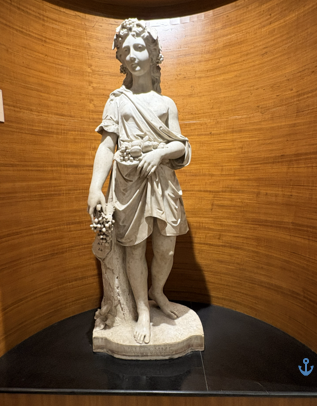

Audio Explanation
L. AUTOMME

এল অটম (AK - 24) * মার্বেল পাথরে খোদাই করা এই ভাস্কর্যটিতে এক তরুণীকে দেখা যায়, যিনি অর্ধনগ্ন অবস্থায় এক লাবণ্যময় ভঙ্গিতে দাঁড়িয়ে আছেন। তাঁর ডান হাতে রয়েছে একগুচ্ছ আঙুর এবং তাঁর পোশাকের ভাঁজে আরও কিছু ফল জমা করা রয়েছে। তাঁর মাথায় শোভা পাচ্ছে আঙুর পাতার তৈরি একটি মালা। ফল, পোশাকের ভাঁজ এবং চুলের খোদাইকাজে সূক্ষ্মতা ও স্বাভাবিকতার ছাপ স্পষ্ট। এই ভাস্কর্যটি শরৎ ঋতুকে তুলে ধরে, যা মূলত ফসল তোলার সময়। আঙুর ও অন্যান্য ফল প্রাচুর্য, উর্বরতা এবং সমৃদ্ধির প্রতীক। ধ্রুপদী শিল্পকলায় ঋতু ও প্রকৃতিকে মূর্ত করার জন্য প্রায়শই নারীমূর্তির ব্যবহার করা হতো। এই ভাস্কর্যটি প্রকৃতির সৌন্দর্য এবং শরৎকালের ফসলের সমৃদ্ধিকে উদযাপন করে।
L. AUTOMME
एल. ऑटोम (AK - 24) * यह संगमरमर की प्रतिमा एक अर्धनग्न युवती को सुंदर और मनोहर मुद्रा में खड़े हुए दर्शाती है। उसके दाहिने हाथ में अंगूरों का एक गुच्छा है, जबकि उसके परिधान की तह में कुछ अन्य फल रखे हुए हैं। उसके सिर को अंगूर की पत्तियों से बनी पुष्पमाला से सजाया गया है। फलों, वस्त्रों की सलवटों और बालों की नक्काशी अत्यंत बारीक और स्वाभाविक ढंग से की गई है। यह प्रतिमा शरद ऋतु का प्रतीक है, जो फसल और उपज का समय होती है। अंगूर और अन्य फल प्रचुरता, उर्वरता और समृद्धि के प्रतीक माने जाते हैं।शास्त्रीय कला में ऋतुओं और प्रकृति को दर्शाने के लिए प्रायः स्त्री आकृतियों का प्रयोग किया जाता था। यह मूर्ति प्रकृति की सुंदरता और फसल के मौसम की समृद्धि का उत्सव प्रस्तुत करती है।
L. AUTOMME
ಲಾ.ಔಟೋಮೇ (AK - 24) * ಈ ಮಾರ್ಬಲ್ (ಅಮೃತಶಿಲೆ) ಶಿಲ್ಪ ಕಲಾಕೃತಿಯು ಸುಂದರ ಭಂಗಿಯಲ್ಲಿ ನಿಂತಿರುವ ಅರ್ಧ-ನಗ್ನ ಯುವತಿಯನ್ನು ಪ್ರದರ್ಶಿಸುತ್ತದೆ. ಆಕೆಯು ತನ್ನ ಬಲಗೈಯಲ್ಲಿ ದ್ರಾಕ್ಷಿಯ ಗೊಂಚಲನ್ನು ಹಿಡಿದುಕೊಂಡಿದ್ದಾಳೆ ಮತ್ತು ಆಕೆಯ ಮಡಚಿದ ಉಡುಪಿನ ಉಡೆಯಲ್ಲಿ ಇನ್ನೂ ಹೆಚ್ಚಿನ ಹಣ್ಣುಗಳು ಇವೆ. ದ್ರಾಕ್ಷಿ ಎಲೆಗಳಿಂದ ಮಾಡಿದ ಕಿರೀಟವು ಆಕೆಯ ಶಿರವನ್ನು ಅಲಂಕರಿಸಿದೆ. ಹಣ್ಣುಗಳು, ವಸ್ತ್ರವಿನ್ಯಾಸ ಮತ್ತು ಕೂದಲಿನ ಕೆತ್ತನೆಯು ಅತ್ಯಂತ ಸೂಕ್ಷ್ಮ ಹಾಗೂ ನೈಜವಾಗಿದೆ. ಈ ಶಿಲ್ಪವು ಸುಗ್ಗಿಯ ಸಮಯವಾದ ಶರತ್ಕಾಲವನ್ನು (ಔಟುಮ್ನ್) ಪ್ರತಿನಿಧಿಸುತ್ತದೆ. ದ್ರಾಕ್ಷಿಗಳು ಮತ್ತು ಹಣ್ಣುಗಳು ಸಮೃದ್ಧಿ, ಫಲವತ್ತತೆ ಮತ್ತು ಐಶ್ವರ್ಯದ ಸಂಕೇತಗಳಾಗಿವೆ. ಶಾಸ್ತ್ರೀಯ ಕಲೆಯಲ್ಲಿ, ಋತುಗಳು ಮತ್ತು ಪ್ರಕೃತಿಯನ್ನು ಪ್ರತಿನಿಧಿಸಲು ಹೆಚ್ಚಾಗಿ ಸ್ತ್ರೀ ರೂಪದ ಪ್ರತಿಮೆಗಳನ್ನು ಬಳಸಲಾಗುತ್ತಿತ್ತು. ಈ ಶಿಲ್ಪಕಲಾಕೃತಿಯು ಪ್ರಕೃತಿಯ ಸೌಂದರ್ಯವನ್ನು ಮತ್ತು ಸುಗ್ಗಿಯ ಋತುವಿನ ಸಮೃದ್ಧಿಯನ್ನು ಕೊಂಡಾಡುತ್ತದೆ.
L. AUTOMME
എൽ. ഓട്ടോമി (AK-24) * ഈ മാർബിൾ ശില്പം അർദ്ധനഗ്നയായ ഒരു യുവതി മനോഹരമായ ഭാവത്തിൽ നിൽക്കുന്നതായി ചിത്രീകരിക്കുന്നു. അവൾ വലതു കയ്യിൽ ഒരു കുല മുന്തിരി പിടിച്ചിരിക്കുന്നു, കൂടാതെ അവളുടെ വസ്ത്രത്തിന്റെ മടക്കുകളിൽ മറ്റു പഴങ്ങളും ശേഖരിച്ചിട്ടുണ്ട്. മുന്തിരിയിലകൾ കൊണ്ടുണ്ടാക്കിയ ഒരു മാല അവളുടെ തലയിൽ അണിയിച്ചിരിക്കുന്നു. പഴങ്ങൾ, വസ്ത്രത്തിന്റെ മടക്കുകൾ, മുടി എന്നിവയുടെ കൊത്തുപണി വളരെ വിശദവും സ്വാഭാവികവുമാണ്. ഈ ശില്പം വിളവെടുപ്പ് കാലമായ ശരത്കാലത്തെ പ്രതിനിധീകരിക്കുന്നു. മുന്തിരിയും മറ്റു പഴങ്ങളും സമൃദ്ധി, ഫലപുഷ്ടി, ഐശ്വര്യം എന്നിവയുടെ പ്രതീകങ്ങളാണ്. ക്ലാസിക്കൽ കലയിൽ, കാലാനുസൃതമായ മാറ്റങ്ങളെയും പ്രകൃതിയെയും പ്രതിനിധീകരിക്കാൻ സ്ത്രീരൂപങ്ങൾ പലപ്പോഴും ഉപയോഗിച്ചിരുന്നു. ഈ ശില്പം പ്രകൃതിയുടെ സൗന്ദര്യത്തെയും വിളവെടുപ്പ് കാലത്തിന്റെ സമൃദ്ധിയെയും ആഘോഷിക്കുന്നു.
L. AUTOMME
ଏଲ୍ ଅଟୋମ୍ (AK-24) * ଆସନ୍ତୁ, ଏହି ମାର୍ବଲ ମୂର୍ତ୍ତିଟି ବିଷୟରେ ଜାଣିବା: ଏହି ମାର୍ବଲ ମୂର୍ତ୍ତିଟି ଏକ ଚମତ୍କାର ଓ ମନୋରମ ଭଙ୍ଗୀରେ ଛିଡ଼ା ହୋଇଥିବା ଜଣେ ଅର୍ଦ୍ଧ-ନଗ୍ନ ଯୁବତୀଙ୍କୁ ଦେଖାଉଛି। ସେ ତାଙ୍କ ଡାହାଣ ହାତରେ ଏକ ଅଙ୍ଗୁର ପେନ୍ଥା ଧରିଛନ୍ତି ଏବଂ ତାଙ୍କ ପୋଷାକର ଭାଙ୍ଗ ମଧ୍ୟରେ ଆହୁରି ଅନେକ ଫଳ ସଂଗୃହିତ ହୋଇ ରହିଛି। ତାଙ୍କ ମସ୍ତକରେ ଅଙ୍ଗୁର ପତ୍ରରେ ନିର୍ମିତ ଏକ ମୁକୁଟ ଶୋଭାପାଉଛି। ଫଳ, ବସ୍ତ୍ରର ଆଚ୍ଛାଦନ ଏବଂ କେଶରାଶିର ଖୋଦେଇ ଅତ୍ୟନ୍ତ ସୂକ୍ଷ୍ମ ଓ ଜୀବନ୍ତ ହୋଇଛି। ଏହି ମୂର୍ତ୍ତିଟି ଶରତ୍ ଋତୁକୁ ପ୍ରତିନିଧିତ୍ୱ କରୁଛି, ଯାହା ଫସଲ ଅମଳର ସମୟ। ଅଙ୍ଗୁର ଏବଂ ଫଳଗୁଡ଼ିକ ପ୍ରଚୁରତା, ଉର୍ବରତା ଓ ସମୃଦ୍ଧିର ପ୍ରତୀକ ଅଟନ୍ତି। ପାରମ୍ପରିକ କଳାରେ ଋତୁ ଏବଂ ପ୍ରକୃତିକୁ ଦର୍ଶାଇବା ପାଇଁ ପ୍ରାୟତଃ ନାରୀ ଆକୃତିଗୁଡ଼ିକୁ ବ୍ୟବହାର କରାଯାଉଥିଲା। ଏହି ଭାସ୍କର୍ଯ୍ୟଟି ପ୍ରକୃତିର ସୌନ୍ଦର୍ଯ୍ୟ ଏବଂ ଫସଲ ଅମଳ ଋତୁର ସମୃଦ୍ଧିକୁ ସୁନ୍ଦର ଭାବେ ଉପସ୍ଥାପିତ କରୁଛି।
L. AUTOMME
எல். ஆட்டோம் (AK-24) * 3. L. AUTOMME (AK - 24) * இந்தச் சலவைக்கல் சிலை, ஒரு இளம் பெண் நளினமான தோரணையில் நின்றுகொண்டிருப்பதைச் சித்தரிக்கிறது. அவர் தனது வலது கையில் திராட்சைக் கொத்து ஒன்றை ஏந்தியுள்ளார்; மேலும் சில பழங்கள் அவரது ஆடையின் மடிப்பில் சேகரிக்கப்பட்டுள்ளன. திராட்சை இலைகளால் ஆன ஒரு சரம் அவரது தலையை அலங்கரிக்கிறது. பழங்கள், ஆடை மடிப்புகள் மற்றும் கூந்தல் ஆகியவற்றின் செதுக்கல் வேலைப்பாடுகள் மிகவும் நுணுக்கமாகவும் இயல்பாகவும் அமைந்துள்ளன. அறுவடைக்காலமான இலையுதிர் காலத்தை இச்சிலை குறிக்கிறது. திராட்சை மற்றும் பிற பழங்கள் ஆகியவை வளம், செழிப்பு மற்றும் செழுமையின் குறியீடுகளாகத் திகழ்கின்றன. செவ்வியல் கலை மரபில், பருவக்காலங்களையும் இயற்கையையும் குறிக்கப் பெரும்பாலும் பெண் உருவங்கள் பயன்படுத்தப்பட்டன. இச்சிற்பம் இயற்கையின் அழகையும் அறுவடைக்காலத்தின் செழுமையையும் கொண்டாடுகிறது.
L. AUTOMME
ఎల్. ఆటోమ్ (AK-24) * ఈ పాలరాతి శిల్పం సుందరమైన భంగిమలో నిల్చున్న ఒక అర్థనగ్న యువతిని వర్ణిస్తుంది. ఆమె తన కుడిచేతిలో ద్రాక్ష గుత్తిని పట్టుకుని ఉండగా, మరికొన్ని పండ్లు ఆమె వస్త్రపు మడతల్లో ఒదిగి ఉన్నాయి. ఆమె శిరస్సు ద్రాక్షాకుల మాలికతో అలంకరించబడి ఉంది. పండ్లు, వస్త్రపు ముడతలు, మరియు కేశాల చెక్కడంలో సహజత్వం, సూక్ష్మమైన పనితనం స్పష్టంగా కనిపిస్తాయి. ఈ ప్రతిమ కోతల కాలమైన శరదృతువుకు ప్రతీకగా నిలుస్తుంది. ద్రాక్షలు, పండ్లు సమృద్ధికి, సంతానోత్పత్తికి, మరియు సౌభాగ్యానికి సంకేతాలు. సాంప్రదాయిక కళల్లో (క్లాసికల్ ఆర్ట్) రుతువులను, ప్రకృతిని సూచించడానికి తరచుగా స్త్రీ రూపాలను ఉపయోగించేవారు. ఈ శిల్పం ప్రకృతి సౌందర్యాన్ని, పంట కాలపు వైభవాన్ని గొప్పగా చాటిచెబుతోంది.
L. AUTOMME
ایل. موسمِ خزاں (AK-24) اس سنگ مرمر کے مجسمے میں ایک نیم عریاں نوجوان خاتون کو خوب صورت انداز میں کھڑا دکھایا گیا ہے۔ وہ اپنے دائیں ہاتھ میں انگور کا ایک گچھا تھامے ہوئے ہے، جبکہ اس کے لباس کی تہوں میں مزید پھل رکھے ہوئے ہیں۔ یہ مجسمہ خزاں کے موسم کی نمائندگی کرتا ہے، جو فصل کی کٹائی کا موسم ہے۔ انگور اور دوسرے پھل کثرت، زرخیزی اور خوش حالی کی علامت ہیں۔ کلاسیکی فن میں خواتین کی شخصیات کو اکثر موسموں اور فطرت کی نمائندگی کے لیے استعمال کیا جاتا تھا۔ یہ مجسمہ فطرت کی خوب صورتی اور فصل کے موسم کی فراوانی کو اجاگر کرتا ہے۔
L. AUTOMME
एल. ऑटोम (एके-24) * हे संगमरवरी शिल्प एका मोहक मुद्रेत उभी असलेली अर्धनग्न तरुण स्त्री दर्शवते. ती तिच्या उजव्या हातात द्राक्षांचा गुच्छ धरून आहे आणि वस्त्राच्या घड्यामध्ये अधिक फळे गोळा केली आहेत. द्राक्षांच्या पानांपासून बनवलेला मुकुट तिचे डोके सजवतो. फळे, वस्त्र आणि केसांचे कोरकाम तपशीलवार आणि नैसर्गिक आहे. हे शिल्प शरद ऋतूचे प्रतिनिधित्व करते, जो कापणीचा काळ आहे. द्राक्षे आणि फळे समृद्धी, सुपीकता आणि भरभराटीची प्रतीके आहेत. शास्त्रीय कलेमध्ये, ऋतू आणि निसर्गाचे प्रतिनिधित्व करण्यासाठी अनेकदा स्त्री आकृत्या वापरल्या जात असत. हे शिल्प निसर्गाचे सौंदर्य आणि कापणीच्या हंगामाची समृद्धी साजरी करते.
L. AUTOMME
એલ. ઓટોમે (AK-24) * આ આરસપહાણની પ્રતિમા અર્ધ-નગ્ન યુવાન સ્ત્રીને સુંદર મુદ્રામાં ઊભી બતાવે છે, તેણીના જમણા હાથમાં દ્રાક્ષનો ગુચ્છ ધરાવે છે અને તેના પહેરવેશમાં વધુ ફળો ભેગા થાય છે. આ પ્રતિમા પાનખરની ઋતુનું પ્રતિનિધિત્વ કરે છે, જે લણણીનો સમય છે. દ્રાક્ષ અને ફળો વિપુલતા, ફળદ્રુપતા અને સમૃદ્ધિનું પ્રતીક છે. શાસ્ત્રીય કલામાં, સ્ત્રી આકૃતિઓનો ઉપયોગ ઘણીવાર ઋતુઓ અને પ્રકૃતિનું પ્રતિનિધિત્વ કરવા માટે થતો હતો. આ શિલ્પ પ્રકૃતિની સુંદરતા અને લણણીની મોસમની સમૃદ્ધિની ઉજવણી કરે છે.